Modcharts¶
Lanes that sway like they've had one too many. Arrows spinning on their way in. Notes riding in on a wave, or sneaking in from the side. That's a modchart - and it's probably the most fun you can have with event scripts.
In MineFunkin a modchart is nothing special: just event files. Usually one song script runs the whole thing, or you place events in the chart to switch effects on and off. Everything on this page works everywhere - in practice at the Retro TV and in fights.
There are two ways to write one, and you can mix them. This page moves the lanes with properties
(strum[0].x = ..., worked out in onFrame) - the Psych and Kade way. The other is modifiers, where
you plan sway, downscroll, turnZ and seventy others on the song's beats, in 3D, on as many playfields as you
like. For a long, planned modchart that's the better fit.
Grab what you like, change the numbers, see what happens. That's honestly how most good modcharts get made. Every property used here is explained in full on strum[lane], strums and note[i].
Start with this¶
Here's an empty modchart, ready to fill in. Save it as modchart.event in the song's folder:
format 1.1
-- The song's modchart: everything that moves the lanes, in one place.
event {
name = "Modchart",
category = "Song script",
description = "Runs for the whole song - no chart event needed.",
}
function onStart()
-- set things up before the countdown
end
function onFrame(dt)
-- things that move all the time; work them out from time or beat
end
function onBeat(b)
-- things that happen on a beat
end
function onStep(n)
-- things that happen on an exact step (four per beat)
end
Kade: modchart.lua with start, update, beatHit, stepHit · Psych: a script in data/song-name/
The three tools¶
Everything you can move falls into one of three groups:
| Tool | Moves | Properties |
|---|---|---|
| Lanes | a receptor and everything in its lane | strum[lane].x, .y, .angle, .scale, .alpha, ... and the whole strumline strums.* |
| The way in | where a lane's notes come from and how fast | strum[lane].direction, .speed, .noteAngle |
| Notes one by one | each note on its own | note[i].x, .y, .alpha, .angle, .scale, .visible |
At a specific part of the song¶
An effect that runs through the whole song gets old quickly. Here are three ways to switch one on and off:
-- 1. By step, in the script itself (step 64 = bar 5).
function onFrame(dt)
if step >= 64 and step < 128 then
for lane = 0, 3 do
strum[lane].angle = time / 3 -- spinning from bar 5 to bar 9
end
end
end
function onStep(n)
if n == 128 then
for lane = 0, 3 do tween(strum[lane].angle, 0, beats(1)) end
end
end
-- 2. By a chart event: place it where it starts, and again where it stops.
params {
on = bool { from = "value1", default = true, label = "On" },
}
local active = false
function onEvent(p)
active = p.on
if not active then resetLanes(beats(1)) end
end
function onFrame(dt)
if not active then return end
-- the effect
end
-- 3. By section (every 4 beats).
function onSection(n)
if n == 16 then flipScroll() end
if n == 24 then flipScroll() end
end
The first keeps the whole modchart in one file, which is nice for reading it later. The second lets you drag it around in the chart editor until it sits right. Pick whatever feels better - you can mix them, too.
Lanes¶
Sway: from side to side¶
function onFrame(dt)
for lane = 0, 3 do
strum[lane].wobbleX = 14 * sin(time / 1000 * 3.2 + lane * 0.9)
end
end
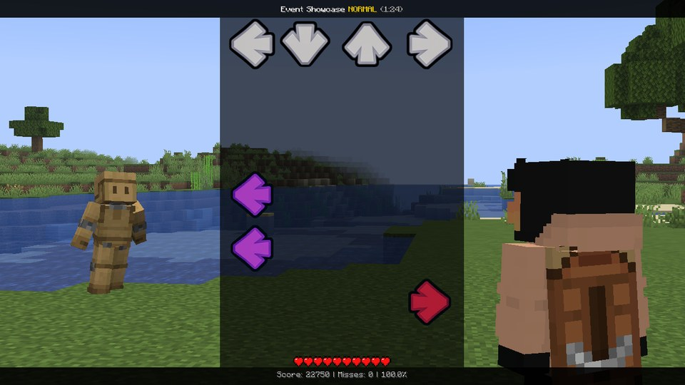
Flip sides: left becomes right¶
function onEvent(p)
for lane = 0, 3 do
tween(strum[lane].x, (3 - 2 * lane) * strums.spacing, beats(0.75), "backOut")
end
end
Lane 0 moves three lanes to the right, lane 3 three to the left, and the middle two swap. Your keys stay the same - so the left arrow is suddenly on the right. Mean, but fun. Tween them back to 0 to undo it.
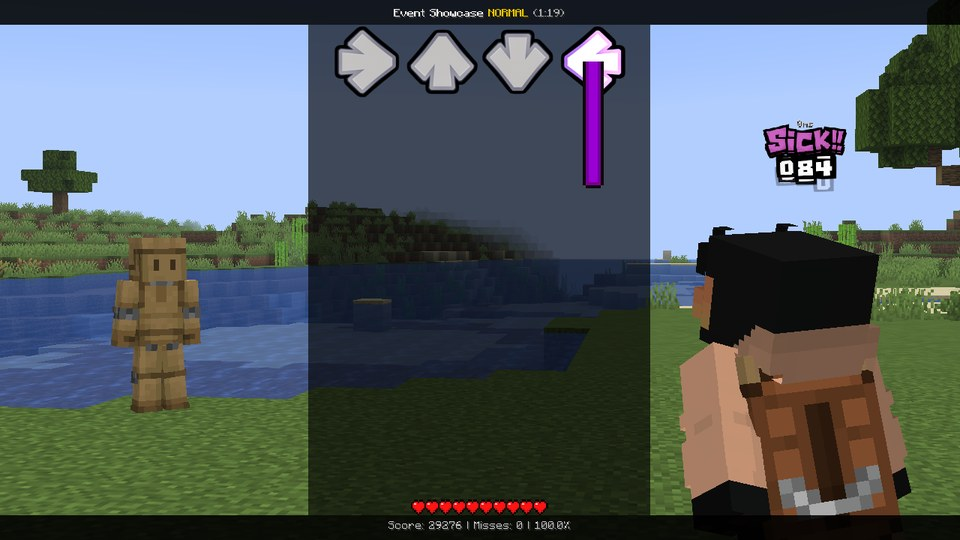
Split scroll: two up, two down¶
Vanishing beats: the notes go, the receptors stay¶
function onBeat(b)
if b % 4 != 2 then return end
for lane = 0, 3 do
strum[lane].noteAlpha = 0
tween(strum[lane].noteAlpha, 1, beats(1), "quadIn")
end
end
noteAlpha fades only the notes and holds - the receptors stay, so the player still knows where to hit. Just not
what's coming.
Lanes in the singer's colour¶
function onOpponentHit(note)
strum[note.lane].color = #FF6060
tween(strum[note.lane].color, #FFFFFF, beats(0.5))
end
Spin, one lane after the other¶
function onEvent(p)
for lane = 0, 3 do
after(beats(0.25 * lane), function()
strum[lane].angle = 0
tween(strum[lane].angle, 360, beats(1), "backOut")
end)
end
end
Ever wondered why each lane gets its own number inside after, even though the loop has moved on? Every
function() ... end remembers the locals as they were the moment it was made.
Pop on the beat¶
function onBeat(b)
for lane = 0, 3 do
after(steps(lane * 0.5), function()
strum[lane].scale = 1.25
tween(strum[lane].scale, 1, beats(0.75), "elasticOut")
end)
end
end
Circles¶
function onFrame(dt)
local t = time / beats(4) * 2 * pi -- one circle per bar
for lane = 0, 3 do
local a = t + lane * pi / 2
strum[lane].x = 24 * cos(a)
strum[lane].y = 24 * sin(a)
end
end
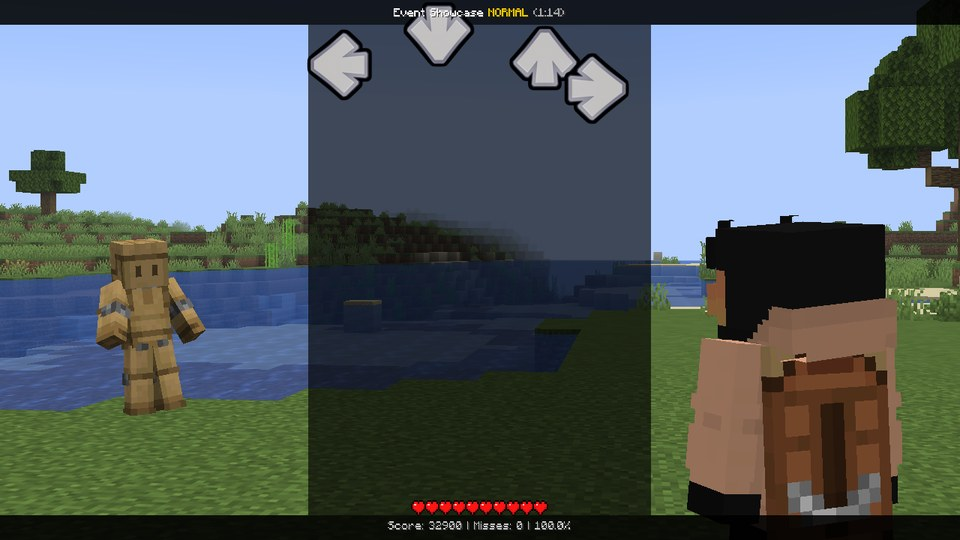
Spread apart on every eighth (Accordion)¶
function onStep(n)
if n % 2 != 0 then return end
for lane = 0, 3 do
strum[lane].x = (lane - 1.5) * strums.spacing * 0.6
tween(strum[lane].x, 0, steps(1.8), "quadOut")
end
end
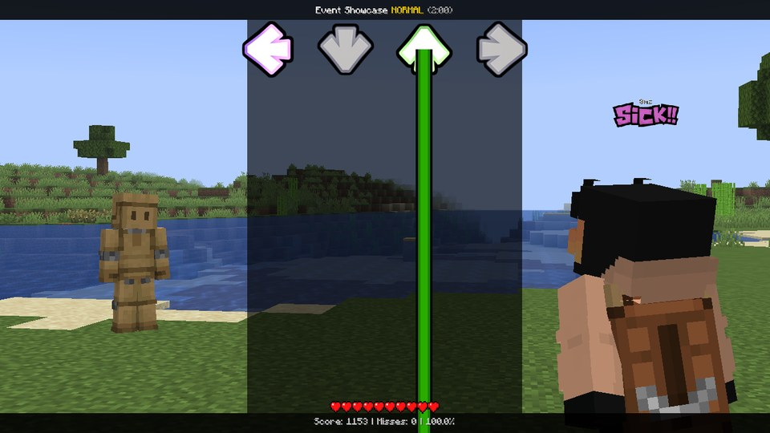
Ghost lanes: the next lane fades every beat¶
function onBeat(b)
local lane = b % 4
strum[lane].alpha = 0.2
tween(strum[lane].alpha, 1, beats(1.5), "quadIn")
end
The whole strumline jumps (Zigzag)¶
local side = 1
function onBeat(b)
side = -side
tween(strums.x, side * 40, beats(0.5), "backOut")
end
The way in¶
Side doors¶
function onEvent(p)
strum[0].direction = -90 -- lane 0's notes come in from the right ...
strum[3].direction = 90 -- ... lane 3's from the left
after(beats(8), function() resetLanes(beats(1)) end)
end
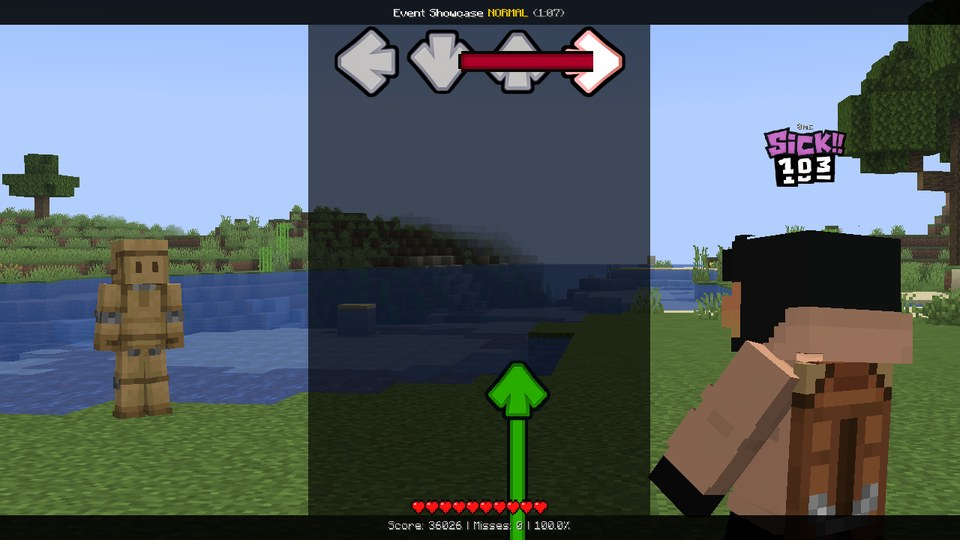
direction turns the lane's way in clockwise around its receptor. The notes themselves stay upright, so the arrows
still point the way you press - only where they come from changes.
Tilted and slow¶
function onEvent(p)
for lane = 0, 3 do
strum[lane].direction = 30 -- every lane comes in at a slant
strum[lane].speed = 0.6 -- and slower
end
end
function onFrame(dt)
strum[1].noteAngle = time / 3 -- lane 1's notes spin on their way in
end
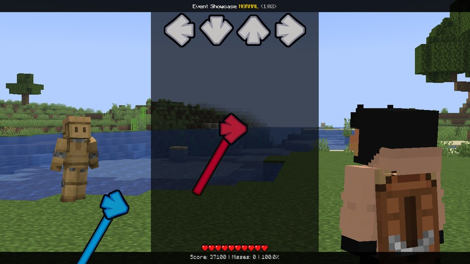
One lane faster¶
A faster lane shows its notes later and they fly in quicker - the classic "trap lane". resetLanes() puts the speed
back along with everything else.
Notes one by one¶
This is where it gets really wild. note[0] ... note[notes.count - 1] are your notes on their way in, the next
one first, and you can move every single one of them.
Set them in onFrame, every frame - they go back to normal before each frame, so you can't break anything for good.
Most effects are built from note[i].distance: how many ms until the note has to be hit. Far away, close by, and
everything in between.
Sway notes: a wave they ride in on¶
function onFrame(dt)
for i = 0, notes.count - 1 do
local d = note[i].distance
note[i].x = sin(d / 120 + time / 400) * 30
note[i].alpha = clamp(1.6 - d / 700, 0, 1) -- far away = see-through
end
end
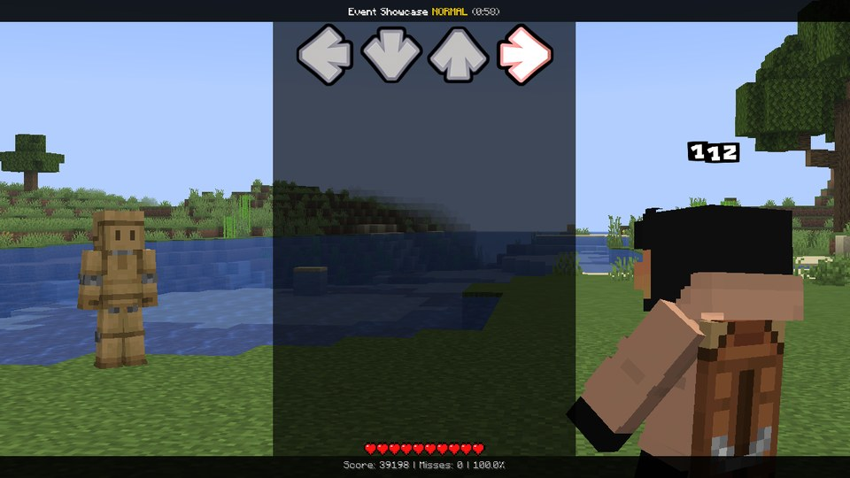
Landing exactly on the receptor
At distance 0 the wave above is still somewhere between -30 and 30 pixels. To make every note land
right on its receptor, let the offset shrink near it: multiply by clamp(d / 300, 0, 1).
Hide near and hide far¶
function onFrame(dt)
for i = 0, notes.count - 1 do
local d = note[i].distance
-- Hide near: notes vanish as they get close (between 450 and 250 ms before the hit).
note[i].alpha = smoothstep(250, 450, d)
end
end
Swap the two numbers (smoothstep(450, 250, d) → 1 near, 0 far) and it's hide far: the notes only show up at the
very last moment. Both are properly hard, so keep them short.
Grow as they come¶
function onFrame(dt)
for i = 0, notes.count - 1 do
note[i].scale = 0.5 + 0.5 * (1 - clamp(note[i].distance / 1000, 0, 1))
end
end
Every other note from the other side¶
function onFrame(dt)
for i = 0, notes.count - 1 do
local d = note[i].distance
local side = note[i].time / beats(1) % 2 < 1 ? 1 : -1 -- by beat: left, right, left, ...
note[i].x = side * clamp(d / 4, 0, 160) -- 0 on the receptor
end
end
Spinning, but only in one lane¶
function onFrame(dt)
for i = 0, notes.count - 1 do
if note[i].lane == 1 then note[i].angle = note[i].distance / 3 end
end
end
(For a whole lane at once, strum[1].noteAngle is shorter.)
Held notes glow¶
function onFrame(dt)
for i = 0, notes.count - 1 do
if note[i].held then note[i].scale = 1.15 end
end
end
Modchart classics¶
The big moves from Taro / Kade style Lua modcharts, the way the Event Showcase does them. The showcase's files ease them in and out nicely; here you get just the core of each, so it's easy to see how it works.
Kicked on the drums¶
local flip = 1
-- Sideways on 0, 0.75, 1.5 and 2.25 of every bar, each time the other way.
function onStep(n)
local s = n % 16
if s == 0 or s == 3 or s == 6 or s == 9 then
flip = -flip
for lane = 0, 3 do
strum[lane].wobbleX = 24 * flip
tween(strum[lane].wobbleX, 0, beats(0.75), "cubicOut")
end
end
end
Off the screen and back¶
function onFrame(dt)
local b = time / beats(1)
local far = screen.height * 1.2
for lane = 0, 3 do
local side = lane % 2 == 0 ? 1 : -1
strum[lane].y = clamp(30 * side * tan(b * 0.25 * pi), -far, far)
end
end
tan() runs off to infinity at beat 2 of every bar: half the lanes shoot off the top, half off the bottom, and then
they come back in from the other side. Looks amazing, plays terribly - so keep it to bars where the player has no
notes.
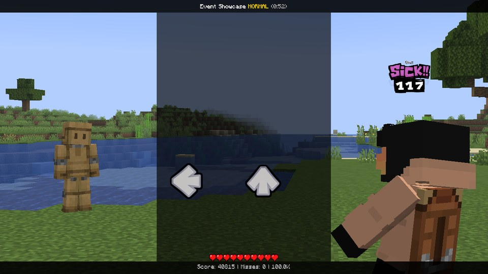
Across the screen, wrapping round¶
function onFrame(dt)
local w = screen.width
local s = strums.spacing
local pos = time / beats(8) * w -- a screen width every two bars
for lane = 0, 3 do
local home = w / 2 + (lane - 1.5) * s
local x = (w / 8 + lane * w / 4 + pos) % w
strum[lane].x = x - home
end
end
home is where the lane normally sits (the strumline is centred), and x is where it should be now: a quarter of
the screen apart, sliding right. The % wraps it back round when it reaches the edge.
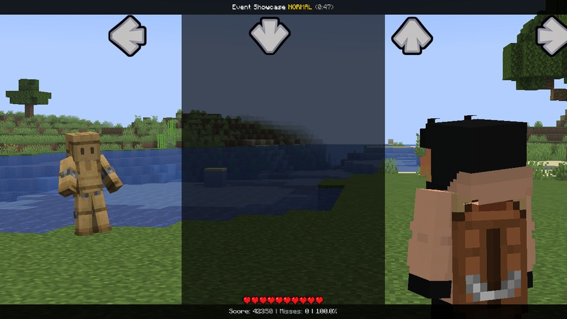
Upside down, the world upright¶
function onEvent(p)
hud.extras = false
tween(hud.angle, 180, beats(4), "cubicInOut")
tween(camera.roll, -180, beats(4), "cubicInOut")
for lane = 0, 3 do
tween(strum[lane].x, (3 - 2 * lane) * strums.spacing, beats(4), "cubicInOut")
tween(strum[lane].angle, -180, beats(4), "cubicInOut")
end
end
Just turning the HUD over would put the lanes in reverse order with every arrow upside down. Mirroring them and
turning the arrows back makes it play like plain old downscroll - it only looks crazy. In a fight the camera rolls
along with hud.angle, and camera.roll turns it back, so the world stays the right way up.
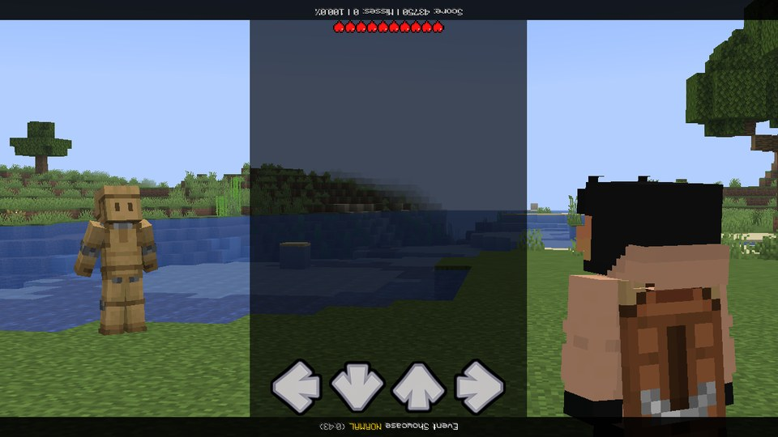
A ring (Halo)¶
function onFrame(dt)
local s = strums.spacing
local turn = time / beats(4) * 2 * pi -- one turn a bar
for lane = 0, 3 do
local a = turn + lane * pi / 2
local depth = cos(a) -- 1 = at the front, -1 = at the back
strum[lane].x = 2.4 * s * sin(a) - (lane - 1.5) * s
strum[lane].y = 0.55 * s * depth
strum[lane].scale = 1 - 0.2 * (1 - depth)
strum[lane].alpha = 1 - 0.25 * (1 - depth)
end
end
- (lane - 1.5) * s cancels the lane's own place, so all four ride the same ring around the middle. The ones at the
back are smaller and fainter, which sells the 3D.
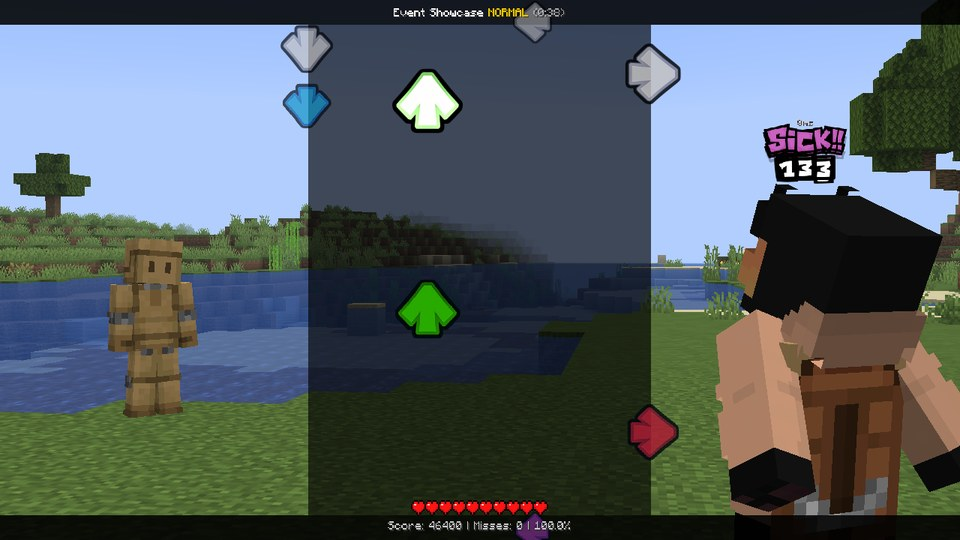
Kade Engine's own example modcharts (spinning receptors, the spinning HUD, jumping arrows, ...) are translated one by one on Coming from Kade Engine.
Effects that fight each other¶
Here's the one thing that trips everybody up: a property can only be driven by one thing at a time. Setting it stops a tween on it, and two scripts writing it every frame just overwrite each other (the event log tells you which two).
The fix is easy. Give every effect that runs at the same time its own channel: one uses x, the next wobbleX, a
third angle. The ways in and note[i] are channels of their own and stack with everything. More on that on
strum[lane].
Keep it playable¶
Everything on this page makes the song harder, and some of it a lot harder. A modchart should be a fun surprise, not a wall. A few rules of thumb:
- Big changes (mirroring, splitting the scroll, a new way in) work best right before a little break, so the player can see the new layout before the notes arrive.
- A wobble of a few pixels makes the lanes feel alive and costs nothing. A wobble of a whole lane width is a different song.
- Don't fade a lane out completely while notes are coming in it. Hide near / hide far: short bursts only.
- Save the wildest stuff (lanes off the screen, the playfield turning over) for bars where only the opponent sings.
- Scattering the lanes to random places (
scatterStrums(), the built-in Note Scramble) is the hardest of all, because nobody can learn it. Use it rarely - or better, not at all.